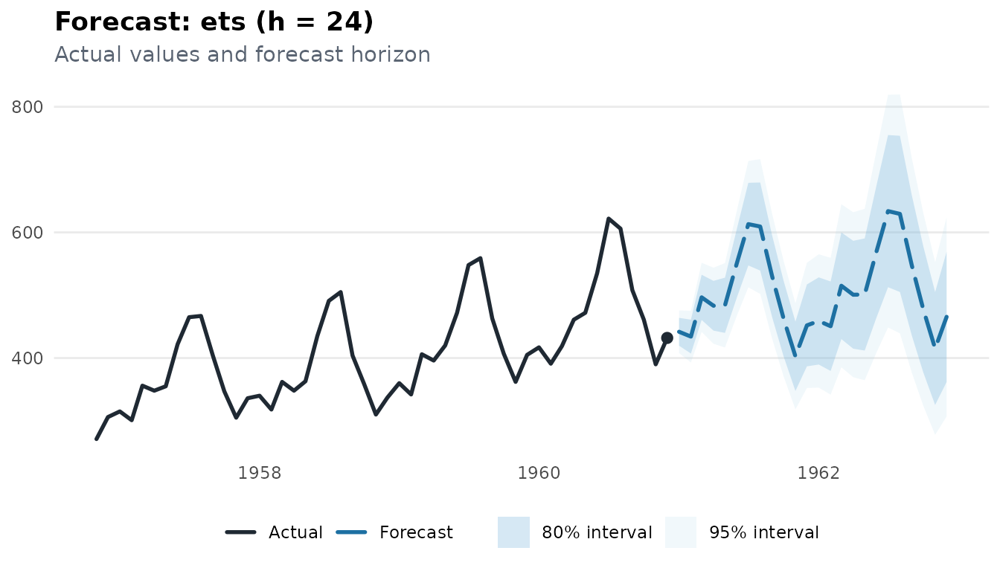

library(milt)
#> milt 0.1.0 — Modern Integrated Library for Timeseries
#> Use `list_milt_models()` to see available models.What milt is
milt stands for Modern Integrated Library for
Timeseries. The package is designed to provide a unified R interface for
the major families of time series work:
- forecasting
- feature engineering
- backtesting and model comparison
- anomaly detection and changepoint analysis
- multi-series analysis
- explainability and diagnostics
- deployment and reporting
The package is intentionally broad. Instead of exposing one API for classical models, another for machine learning, and another for deep learning, it uses a single workflow pattern across the library.
Core design principle
The central workflow is:
milt_model("<name>") |> milt_fit(series) |> milt_forecast(horizon = 12)That same structure applies regardless of model family. This makes it easier to:
- swap models without rewriting the rest of the workflow
- evaluate models under the same backtesting setup
- build ensembles and comparisons across heterogeneous backends
- standardize how outputs are printed, plotted, and converted to tibbles
Main object model
The package is centered on a small set of reusable objects.
MiltSeries
MiltSeries is the canonical container for all time
series data inside the package. Most user-facing functions either
consume or return a MiltSeries.
Create it from many source types:
air <- milt_series(AirPassengers)
print(air)
#> # A MiltSeries: 144 x 1 [monthly]
#> # Time range : 1949 Jan — 1960 Dec
#> # Components : value
#> # Gaps : none
#> # A tibble: 6 × 2
#> time value
#> <date> <dbl>
#> 1 1949-01-01 112
#> 2 1949-02-01 118
#> 3 1949-03-01 132
#> 4 1949-04-01 129
#> 5 1949-05-01 121
#> 6 1949-06-01 135
#> # … with 138 more rowsCommon accessors:
air$n_timesteps()
#> [1] 144
air$freq()
#> [1] "monthly"
air$start_time()
#> [1] "1949-01-01"
air$end_time()
#> [1] "1960-12-01"
head(air$values())
#> [1] 112 118 132 129 121 135
MiltModel
MiltModel objects represent model specifications before
fitting and fitted model states after training.
model <- milt_model("naive")
model
#> # A MiltModel <naive> [unfitted]
MiltForecast
Forecast results are returned as a MiltForecast, which
contains point forecasts, interval columns, and plotting/printing
helpers.
fct <- milt_model("naive") |>
milt_fit(air) |>
milt_forecast(horizon = 12)
#> Fitting <MiltNaive> model…
#> Done in 0s.
print(fct)
#> # A MiltForecast <naive>: horizon = 12# Forecast from: 1960-12-01# Intervals : 80, 95%#
#> # A tibble: 6 × 7
#> time .model .mean .lower_80 .upper_80 .lower_95 .upper_95
#> <date> <chr> <dbl> <dbl> <dbl> <dbl> <dbl>
#> 1 1961-01-01 naive 432 389. 475. 366. 498.
#> 2 1961-02-01 naive 432 371. 493. 339. 525.
#> 3 1961-03-01 naive 432 357. 507. 318. 546.
#> 4 1961-04-01 naive 432 346. 518. 300. 564.
#> 5 1961-05-01 naive 432 335. 529. 284. 580.
#> 6 1961-06-01 naive 432 326. 538. 270. 594.
#> # … with 6 more rows
head(fct$as_tibble())
#> # A tibble: 6 × 7
#> time .model .mean .lower_80 .upper_80 .lower_95 .upper_95
#> <date> <chr> <dbl> <dbl> <dbl> <dbl> <dbl>
#> 1 1961-01-01 naive 432 389. 475. 366. 498.
#> 2 1961-02-01 naive 432 371. 493. 339. 525.
#> 3 1961-03-01 naive 432 357. 507. 318. 546.
#> 4 1961-04-01 naive 432 346. 518. 300. 564.
#> 5 1961-05-01 naive 432 335. 529. 284. 580.
#> 6 1961-06-01 naive 432 326. 538. 270. 594.Forecasting workflows
Forecasting is one major pillar of the package.
fct_ets <- milt_model("ets") |>
milt_fit(air) |>
milt_forecast(horizon = 24)
#> Fitting <MiltEts> model…
#> Done in 0.62s.
plot(fct_ets)
The forecasting layer supports several families of models:
- baseline models such as naive, seasonal naive, and drift
- classical statistical models such as ETS, Auto-ARIMA, Theta, STL, and TBATS
- machine-learning models such as XGBoost, LightGBM, random forest, elastic net, SVM, and related backends
- ensemble workflows
- deep-learning backends through
torchandreticulateintegrations
Inspect the available registry:
list_milt_models()
#> # A tibble: 25 × 6
#> name description multivariate probabilistic covariates multi_series
#> <chr> <chr> <lgl> <lgl> <lgl> <lgl>
#> 1 snaive "Seasonal … FALSE TRUE FALSE FALSE
#> 2 ets "Exponenti… FALSE TRUE FALSE FALSE
#> 3 nbeats "" FALSE FALSE FALSE FALSE
#> 4 auto_arima "Automatic… FALSE TRUE TRUE FALSE
#> 5 knn "K-Nearest… FALSE TRUE FALSE FALSE
#> 6 svm "Support V… FALSE TRUE FALSE FALSE
#> 7 stl "STL decom… FALSE TRUE FALSE FALSE
#> 8 elastic_net "" FALSE FALSE FALSE FALSE
#> 9 deepar "" FALSE FALSE FALSE FALSE
#> 10 darts_transfo… "" FALSE FALSE FALSE FALSE
#> # ℹ 15 more rowsEvaluation and backtesting
The package includes multiple levels of evaluation.
Train/test splits
spl <- milt_split(air, ratio = 0.8)
spl$train$n_timesteps()
#> [1] 115
spl$test$n_timesteps()
#> [1] 29Accuracy metrics
fct_test <- milt_model("naive") |>
milt_fit(spl$train) |>
milt_forecast(spl$test$n_timesteps())
#> Fitting <MiltNaive> model…
#> Done in 0s.
milt_accuracy(
actual = spl$test$values(),
predicted = fct_test$as_tibble()$.mean
)
#> # A tibble: 5 × 2
#> metric value
#> <chr> <dbl>
#> 1 MAE 81.4
#> 2 MSE 8674.
#> 3 RMSE 93.1
#> 4 MAPE 0.202
#> 5 R2 -0.421Rolling-origin backtesting
bt <- milt_backtest(
model = milt_model("naive"),
series = air,
horizon = 12,
initial_window = 108L,
stride = 12L
)
#> Running expanding backtest (3 folds): naive, h=12
print(bt)
#>
#> ── MiltBacktest <naive> ──
#>
#> • Method : expanding
#> • Horizon : 12
#> • Folds : 3
#>
#> ── Summary (across folds)
#> # A tibble: 3 × 5
#> metric mean sd min max
#> <chr> <dbl> <dbl> <dbl> <dbl>
#> 1 MAE 73.2 19.6 52.3 91.3
#> 2 RMSE 97.5 19.0 76.4 113.
#> 3 MAPE 0.153 0.0385 0.121 0.195Model comparison
cmp <- milt_compare(
models = list(
naive = milt_model("naive"),
drift = milt_model("drift")
),
series = air,
horizon = 12,
initial_window = 108L,
stride = 12L
)
#> Comparing 2 models: naive, drift
#> Running backtest for "naive"...
#> Running expanding backtest (3 folds): naive, h=12
#> Running backtest for "drift"...
#> Running expanding backtest (3 folds): drift, h=12
print(cmp)
#>
#> ── MiltComparison - 2 models ──
#>
#> • Rank metric : MAE
#> • Models : naive, drift
#>
#> ── Ranked by MAE (mean across folds)
#> # A tibble: 2 × 5
#> model MAE RMSE MAPE rank
#> <chr> <dbl> <dbl> <dbl> <int>
#> 1 drift 64.2 88.0 0.134 1
#> 2 naive 73.2 97.5 0.153 2Feature engineering and pipelines
milt supports direct feature steps and pipeline
composition.
Direct steps
air_features <- air |>
milt_step_lag(lags = 1:6) |>
milt_step_rolling(windows = 3L, fns = "mean") |>
milt_step_fourier(period = 12, K = 2)
print(air_features)
#> # A MiltSeries: 136 x 1 [monthly]
#> # Time range : 1949 Sep — 1960 Dec
#> # Components : value
#> # Gaps : none
#> # A tibble: 6 × 13
#> time value .lag_1 .lag_2 .lag_3 .lag_4 .lag_5 .lag_6 .rolling_mean_3
#> <date> <dbl> <dbl> <dbl> <dbl> <dbl> <dbl> <dbl> <dbl>
#> 1 1949-09-01 136 148 148 135 121 129 132 144
#> 2 1949-10-01 119 136 148 148 135 121 129 134.
#> 3 1949-11-01 104 119 136 148 148 135 121 120.
#> 4 1949-12-01 118 104 119 136 148 148 135 114.
#> 5 1950-01-01 115 118 104 119 136 148 148 112.
#> 6 1950-02-01 126 115 118 104 119 136 148 120.
#> # ℹ 4 more variables: .fourier_sin_1 <dbl>, .fourier_cos_1 <dbl>,
#> # .fourier_sin_2 <dbl>, .fourier_cos_2 <dbl>
#> # … with 130 more rowsAvailable step families include:
- lag features
- rolling statistics
- Fourier seasonality terms
- calendar features
- scaling and inverse scaling
Pipelines
Pipelines let you define repeatable transformations and model application in a single object.
pipe <- milt_pipeline() |>
milt_pipe_step_lag(lags = 1:12) |>
milt_pipe_step_rolling(windows = c(3L, 6L), fns = "mean") |>
milt_pipe_model("xgboost")
pipe <- milt_pipeline_fit(pipe, air)
fct <- milt_pipeline_forecast(pipe, horizon = 12)Diagnostics and analysis
The package includes diagnostics beyond forecasting.
Series diagnostics
dx <- milt_diagnose(air)
print(dx)
#> # MiltDiagnosis
#> # Series : 144 obs @ monthly# Range : 1949-01-01 — 1960-12-01
#> Stationarity : stationary (CV ratio = 0.028)Seasonality : seasonal (strength = 0.462, period = 12)Trend : trend present (slope = 2.6572, p = 0)Gaps : noneOutliers : none
#> Recommendations:
#> • Significant linear trend detected. Models without detrending may underfit.• Seasonality detected (strength = 0.46, period = 12). Use a seasonal model (ETS, SARIMA, STL).Exploratory analysis
eda <- milt_eda(air)
#> Registered S3 method overwritten by 'quantmod':
#> method from
#> as.zoo.data.frame zoo
#> Warning in tseries::adf.test(x): p-value smaller than printed p-value
#> Warning in tseries::kpss.test(x): p-value smaller than printed p-value
#> # MiltEDA
#> # Series : 144 obs 1949-01-01 — 1960-12-01
#> # Freq : monthly
#> ## Descriptive Statistics
#> # A tibble: 11 × 2
#> stat value
#> <chr> <dbl>
#> 1 n 144
#> 2 mean 280.
#> 3 sd 120.
#> 4 min 104
#> 5 q25 180
#> 6 median 266.
#> 7 q75 360.
#> 8 max 622
#> 9 skewness 0.571
#> 10 kurtosis 2.57
#> 11 n_missing 0
#> ## Stationarity
#> # ADF p-value : 0.01
#> # KPSS p-value : 0.01
#> # Likely stationary: FALSE## Seasonality
#> # Detected period : 12
#> # Seasonal strength : 0.462
#> # Has seasonality : TRUE
print(eda)
#> # MiltEDA
#> # Series : 144 obs 1949-01-01 — 1960-12-01
#> # Freq : monthly
#> ## Descriptive Statistics
#> # A tibble: 11 × 2
#> stat value
#> <chr> <dbl>
#> 1 n 144
#> 2 mean 280.
#> 3 sd 120.
#> 4 min 104
#> 5 q25 180
#> 6 median 266.
#> 7 q75 360.
#> 8 max 622
#> 9 skewness 0.571
#> 10 kurtosis 2.57
#> 11 n_missing 0
#> ## Stationarity
#> # ADF p-value : 0.01
#> # KPSS p-value : 0.01
#> # Likely stationary: FALSE## Seasonality
#> # Detected period : 12
#> # Seasonal strength : 0.462
#> # Has seasonality : TRUEExplainability
For supported model types, milt_explain() provides
feature-importance style summaries and plots.
exp <- milt_explain(fitted_model)
print(exp)
plot(exp)Anomaly detection and changepoints
milt also includes detection workflows for unusual
behavior in series.
detector <- milt_detector("iqr")
anom <- milt_detect(detector, air)
print(anom)
#> # MiltAnomalies [iqr]
#> # Series : 144 observations 1949-01-01 — 1960-12-01
#> # Anomalies : 0 / 144 (0%)Changepoint analysis is exposed separately:
cp <- milt_changepoints(air)
print(cp)
#> # MiltChangepoints [pelt]
#> # Series : 144 obs 1949-01-01 — 1960-12-01
#> # Changepoints: 127# Locations:
#> # A tibble: 127 × 2
#> index time
#> <int> <date>
#> 1 1 1949-01-01
#> 2 2 1949-02-01
#> 3 4 1949-04-01
#> 4 5 1949-05-01
#> 5 6 1949-06-01
#> 6 8 1949-08-01
#> 7 9 1949-09-01
#> 8 10 1949-10-01
#> 9 11 1949-11-01
#> 10 13 1950-01-01
#> # ℹ 117 more rowsMulti-series workflows
For grouped or panel data, the package includes:
- clustering
- classification
- reconciliation
Those workflows are documented further in the dedicated multi-series vignette, but they fit into the same object-oriented structure as the rest of the package.
Deployment layer
The package includes several operational helpers:
This makes the package useful beyond experimentation. The intended scope covers development, validation, and handoff or delivery workflows as well.
Built-in datasets
The package ships with example data for demonstrations and tests:
-
milt_air: monthly airline passenger data -
milt_retail: synthetic multi-series retail data -
milt_energy: synthetic energy demand data with covariates
Documentation map
The pkgdown site should be read in layers:
- Start with this overview.
- Read the getting-started guide for the basic workflow.
- Use the task-focused vignettes for forecasting, anomaly detection, pipelines, multi-series work, deep learning, and deployment.
- Use the reference index for exact function-level documentation.
Summary
milt is not just a small forecasting wrapper. It is
structured as a broader time series workbench:
- one core series type
- one model workflow
- one evaluation pattern
- multiple interchangeable backends
- supporting layers for diagnostics, anomaly detection, multi-series tasks, and deployment
That is the main organizing idea behind the package and the website.